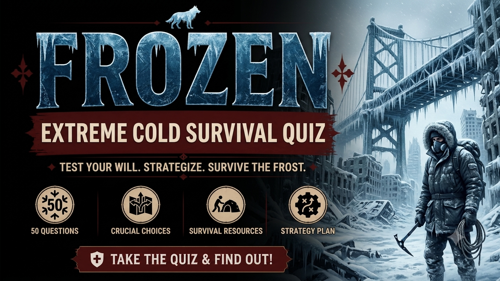

Extreme Cold Survival Quiz
Face 50 difficult decisions in a world threatened by extreme cold. Deal with failing heaters, dangerous storms, hypothermia, scarce water, risky journeys, failing technology and difficult choices about other survivors. Discover your survival decision score and how your choices reflect compassion and ethical judgment.
Choose carefully. Your survival decision score and compassion-and-ethics score are calculated separately. Every decision could affect your chances of surviving the cold.
This is a fictional extreme-cold survival experience. Your result is based on the choices you make during the quiz. Scenarios are designed for entertainment and are not a substitute for official emergency guidance.


About the Extreme Cold Survival Quiz
The Extreme Cold Survival Quiz is a 50-decision fictional survival challenge set in a world where freezing temperatures, severe storms and shortages threaten human survival. You must make difficult choices involving shelter, cold-related injuries, water, food, travel, technology and other survivors.
The challenge goes beyond surviving a single freezing night. You may face a failing heater, a blizzard that blocks your route, a frozen water system, an injured companion or a settlement running dangerously low on supplies. Each scenario asks you to weigh immediate risks against longer-term survival.
Your choices contribute to a Survival Score, while certain decisions also contribute to a separate Compassion & Ethics Score. The scores explore different aspects of decision-making: practical survival priorities, compassion, fairness, cooperation and responsibility under pressure.
The scenarios and scoring are fictional. This quiz is intended for entertainment and general discussion of decision-making under uncertainty, not as a prediction of how someone would behave in a real emergency.
What This Quiz Covers
The 50 decisions cover different problems that could arise during an extreme cold-weather crisis. Some situations involve immediate physical danger, while others focus on maintaining essential services, managing supplies and keeping a settlement functioning.
Cold, Shelter and Injuries
Face failing heating systems, damaged shelters, blizzards, wet clothing, frostbite and signs of hypothermia. These scenarios focus on reducing exposure, recognising danger and making decisions when time and resources are limited.
Water and Essential Supplies
Snow, frozen rivers, damaged pipes and contaminated water sources create difficult choices. You must also consider fuel use, stored water, food supplies and the challenge of stretching limited resources through an uncertain winter.
Travel and Dangerous Conditions
Choose routes during whiteouts, assess frozen lakes and damaged bridges, and decide what to do when a vehicle becomes stranded. Weather, injuries, visibility and the condition of your group can change the risks of a journey.
Technology and Power
Solar panels, generators, batteries, radios, water pumps and medical refrigeration may become unreliable. These decisions explore how to prioritise essential services, assess faults and avoid risking people unnecessarily to recover equipment.
Scarcity, Leadership and Other Survivors
Supplies are not always enough for everyone. You may encounter armed groups, injured strangers, refugees or disagreements within your settlement. Choices involve negotiation, fair allocation, cooperation and balancing the needs of individuals against those of the wider group.
Food Production and Long-Term Survival
Failed crops, damaged greenhouses, limited sunlight and dwindling livestock feed make long-term survival difficult. Consider how to protect food reserves, maintain small-scale production and adapt when familiar systems no longer work.
Compassion, Ethics and Difficult Choices
Certain decisions contribute to a separate Compassion & Ethics Score. These scenarios explore fairness, responsibility, cooperation, trust and the willingness to help others while considering the practical risks of a prolonged cold-weather crisis.
How the Quiz Works
The complete quiz contains 50 fictional survival decisions. Every decision presents four possible choices. Read the situation carefully and select the option you believe offers the best outcome within that scenario.
The questions may appear in a randomized order. Answer choices can also be shuffled, so the position of an option should not be treated as an indication of whether it is the strongest choice.
Each decision can contribute to your Survival Score. Some decisions also contain a separate compassion-and-ethics component. The two scores are calculated independently so that survival-oriented choices and ethical choices can be represented separately.
A choice that improves survival does not necessarily represent the most compassionate decision. Likewise, a compassionate decision is not necessarily the safest option in every fictional situation.
Your final result includes a decision profile based on your quiz score. It describes your choices within the fictional scenarios rather than predicting your actual behaviour or guaranteeing survival in a real emergency.
Quiz Navigation
Starting the Quiz
Select START QUIZ on the opening screen to begin. Your first extreme-cold survival decision will appear with four possible choices.
Choosing an Answer
Read the complete situation and all four choices before deciding. Consider the immediate danger, the reliability of the available information and the possible consequences of your choice.
Moving Between Decisions
Use NEXT to continue through the quiz. The BACK button allows you to return to an earlier decision and reconsider your previous choice before submitting.
Completing the Quiz
Continue until all 50 decisions have been completed. When you are finished, select SUBMIT to calculate your Survival Score, Compassion & Ethics Score, decision profile and final descriptions.
Trying Again
After seeing your result, select TRY AGAIN to replay the quiz and make different decisions. You can also use SHARE MY RESULT or CHALLENGE SOMEONE to share your result with other players.
Frequently Asked Questions
How many decisions are in the quiz?
There are 50 fictional survival decisions, and every decision provides four possible choices.
What does the Survival Score measure?
The Survival Score represents how effectively your decisions address the fictional survival challenges presented throughout the quiz. A higher score indicates stronger overall survival decision-making within these scenarios.
What is the Compassion & Ethics Score?
The Compassion & Ethics Score reflects choices involving factors such as compassion, fairness, trust and responsibility. It is calculated separately from the Survival Score and represents performance within this fictional quiz, not an objective judgment of someone's character.
Can I have a high Survival Score and a lower Compassion & Ethics Score?
Yes. The two scores measure different aspects of your decisions. A choice that improves your chances of survival does not necessarily represent the most compassionate or fair decision.
Does the quiz cover hypothermia and frostbite?
Yes. Some scenarios involve signs of cold-related injuries and the challenge of responding to them while shelter, time and medical resources are limited. The quiz is fictional and is not a substitute for professional medical advice or emergency care.
Does the quiz include blizzards and dangerous travel?
Yes. Decisions include whiteouts, freezing rain, stranded vehicles, frozen lakes, damaged bridges and journeys made more dangerous by poor visibility or worsening weather.
Will I need to manage food, water and fuel?
Yes. Several scenarios involve rationing stored water, melting snow, conserving fuel, finding food, maintaining power and making limited supplies last.
Does the quiz include other survivors?
Yes. You may face difficult choices involving refugees, injured strangers, armed groups, settlement leaders and disagreements over scarce resources.
Does the quiz include farming and livestock?
Yes. Some scenarios involve damaged greenhouses, limited sunlight, failed crops and the challenge of feeding livestock when supplies are running low.
Does the quiz provide real emergency instructions?
No. This is a fictional entertainment experience, and its scenarios and scoring are not official emergency guidance. For real emergencies, follow instructions from appropriate emergency-management and public-safety authorities.
Can I change my answers?
Yes. You can use the BACK button to return to earlier decisions and reconsider your choices before submitting the quiz.
Can I take the quiz again?
Yes. Select TRY AGAIN after receiving your result to restart the quiz and experiment with different decisions.
Can I challenge my friends?
Yes. After completing the quiz, use CHALLENGE SOMEONE to share the challenge and compare your decision profiles with other players.